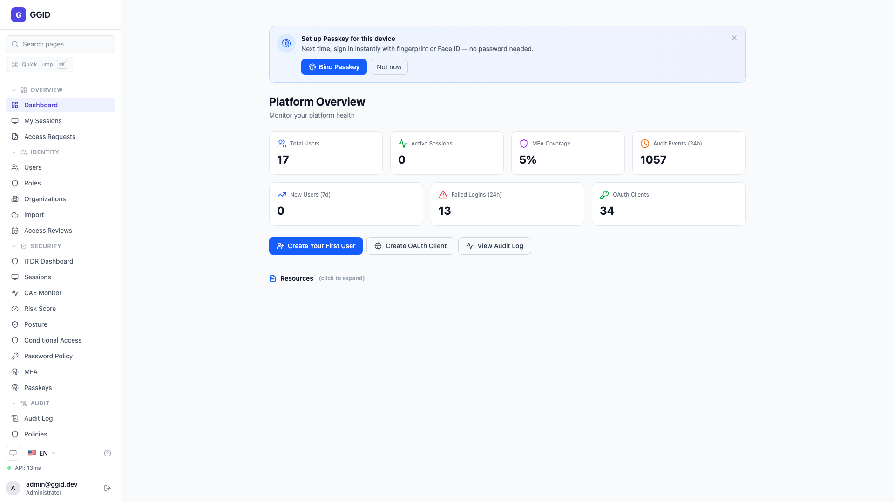
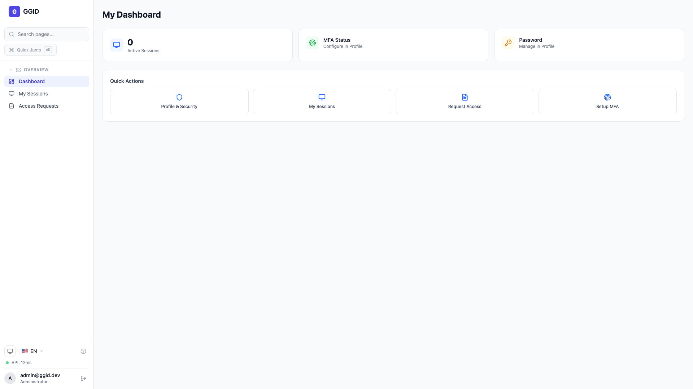

GGID IAM Suite
全功能演示 · Full Feature Showcase
三层角色权限模型
所有角色
🔵 Tenant Admin
tenant:admin (per-tenant)
- 用户/角色/组织管理
- 安全策略 (CAE/MFA/密码)
- OAuth/Webhook/API Key
- Branding / Feature Flags
- Impersonation / Secrets
- 审计日志 (本租户)
🟢 Regular User
user:self
- 个人 Dashboard
- 我的会话
- 访问申请
- 个人资料管理
关键设计
JWT claims 按 tenant_id 过滤角色。Platform:admin 不自动继承租户内部权限，除非同时被分配为该租户的 tenant:admin。
gateway/router.go checkRouteScope · oauth_service.go fetchUserRoleKeys(tenant_id)
角色视角对比 — Sidebar 导航
三角色差异
Tenant Admin

OVERVIEW + IDENTITY + SECURITY + APPLICATIONS + ADMINISTRATION
❌ 无 PLATFORM 组
Regular User

OVERVIEW only
❌ 无管理功能
技术实现
Sidebar 通过 requiredScope + NAV_PERMISSION_MAP 动态过滤。AuthGuard 按 URL 前缀检查 scope。
sidebar.tsx hasScope() · auth-guard.tsx ADMIN_PREFIXES · api.ts getUserRole()
01
身份管理 Identity Management
用户 · 角色 · 组织 · 导入 · 访问审查
用户管理 Users
Tenant Admin
功能亮点
用户列表展示头像/邮箱/角色徽章/状态。支持实时搜索。RLS 确保用户只能看到当前 tenant 的数据。
GET /api/v1/users · RLS: app.tenant_id · Scope: tenant:admin
角色管理 Roles & Permissions
Tenant Admin
功能亮点
角色 CRUD + 细粒度权限分配 + 层级管理 + ABAC 策略构建器。系统预置：Administrator/Editor/Viewer。
GET/POST/PUT/DELETE /api/v1/roles · permission_ids 数组格式
组织管理 Organizations
Tenant Admin
功能亮点
组织树可视化、部门结构、成员管理、组织分析数据。
GET /api/v1/orgs/tree · departments 子路径路由
02
安全策略 Security
CAE · MFA · 密码策略 · ITDR · 安全态势
条件访问 Conditional Access (CAE)
Tenant Admin
功能亮点
IF-THEN 策略：IF device_posture < 70 THEN require_mfa。支持条件（设备/风险/IP/时间/位置/MFA）和动作（allow/deny/require_mfa/block）。策略持久化到后端，登录时执行拦截。
commit 5de4c4322 (持久化) · commit 58d222d57 (登录拦截)
多因素认证 MFA
所有用户
功能亮点
TOTP（二维码扫描）、WebAuthn（Face ID/Touch ID/YubiKey）、备份方式（SMS/Email）。Setup 返回 device_id + secret，Verify 验证 6 位码。
POST /api/v1/auth/mfa/setup → device_id · POST /mfa/verify → verified:true
ITDR 威胁检测
Tenant Admin
功能亮点
MFA 疲劳攻击检测、不可能旅行、凭证填充、令牌窃取检测。MITRE ATT&CK 覆盖率 82%。自动响应（contain/resolve/investigating）。
MITRE Coverage 82% · 自动事件响应
安全态势 Security Posture
Tenant Admin
功能亮点
综合评分 75/100：ITDR 覆盖(88)、风险平均(34)、DLP 合规(94)、MITRE 覆盖(82)。风险分布 Low 83% / Medium 12% / High 3% / Critical 1%。
GET /api/v1/security/dashboard · failed_logins_24h=14
安全概览仪表盘
Tenant Admin
功能亮点
活跃威胁(24h)：41 个（Critical 2 / High 5 / Medium 11 / Low 23）。合规：SOC2 91% / ISO27001 85% / NIS2 87% / NIST 82%。
failed_logins_24h=14 · total_events_24h=643
03
审计合规 Audit & Compliance
Hash Chain 防篡改 · 全局审计 · 威胁仪表盘
审计日志 Audit Log
Tenant Admin
功能亮点
HMAC-SHA256 hash chain 链式结构，任何篡改都会被检测。IP 地址自动清洗（去端口号，兼容 inet 类型）。
domain.ComputeHash · repair-chain · inet IP:PORT 清洗
全局审计 Global Audit
仅 Instance Admin
功能亮点
实例管理员可查看所有租户审计事件。Tenant Admin 无法访问（RBAC 限制 platform:admin）。
platformOnlyPaths: /api/v1/admin/audit/global
威胁仪表盘 Threat Dashboard
仅 Instance Admin
功能亮点
41 个活跃威胁(24h)：MFA 疲劳攻击、不可能旅行、凭证填充、令牌窃取。
GET /api/v1/admin/threats/dashboard
04
应用集成 Application Integration
OAuth · Webhook · API Key · SCIM · LDAP · SAML
OAuth Client 管理
Tenant Admin
功能亮点
OAuth 2.0 Client 全生命周期：创建/编辑/禁用/重新启用/删除。支持 Authorization Code、Password Grant、Client Credentials、PKCE。
POST/PUT/DELETE /api/v1/oauth/clients · Refresh Token Rotation
Webhook 管理
Tenant Admin
功能亮点
Webhook 端点 CRUD + 子路径操作：test（测试 payload）、deliveries（交付历史）、rotate-secret（HMAC 密钥轮换）。
commit cd86308f6 (name字段) · commit 88737acec (子路径)
API Key 管理
Tenant Admin
功能亮点
API Key scope 强制执行。只读 Key 尝试写操作返回 403 Forbidden（正确 HTTP 语义）。
commit d27315249 (scope enforcement) · commit eadd97780 (403语义)
SAML SSO 配置
Tenant Admin
功能亮点
SAML 2.0 SP 配置：Metadata XML 生成/下载、IdP 集成、属性映射。支持企业 SSO。
GET /api/v1/settings/saml-config
05
运维管理 Administration
Impersonation · Secrets · Key Rotation · Backup
用户模拟 Impersonation
Tenant Admin
功能亮点
完整流程：搜索用户→选择→输入理由→Start→JWT token→Banner 显示→End Session 恢复。所有操作记录审计日志。
5-layer fix: 路径+参数+JWT+history+banner · commits 9c99c59da~94fea7c09
Secrets 管理
Tenant Admin
功能亮点
租户级密钥管理：查看/轮换 JWT/OAuth/加密密钥。Graceful rotation，新旧密钥并行验证。
/api/v1/admin/secrets · per-tenant isolation
备份与灾难恢复
Tenant Admin
功能亮点
租户数据备份：手动触发、备份历史、灾难恢复策略。数据按 tenant 隔离。
/api/v1/admin/backup · per-tenant
密码策略配置
Tenant Admin
功能亮点
密码复杂度规则配置：最小长度(12)、大小写/数字/特殊字符要求。用户创建时强制执行。
GET/PUT /api/v1/settings/password-policy
会话管理 Sessions
所有用户
功能亮点
活跃会话列表（IP/设备/时间/位置），可撤销会话。Session Policy 配置超时和并发限制。
GET /api/v1/auth/sessions · DELETE /sessions/{id}
06
平台管理 & 定制 Platform
租户管理 · Branding · Feature Flags
租户管理 Tenant Management
仅 Instance Admin
功能亮点
创建/暂停/激活租户。自动 seed 默认角色和权限。
platformOnlyPaths: /api/v1/tenants/create · suspend · activate
白标定制 Branding
Tenant Admin
功能亮点
每租户定制品牌：主色调、Logo、自定义域名。存储在 tenant_branding 表。
GET/PUT /api/v1/tenants/{id}/branding
功能开关 Feature Flags
Tenant Admin
功能亮点
租户级功能开关：为不同租户启用/禁用特定功能模块。
settings:write · per-tenant feature flag
07
总结 Summary
角色权限对比 · 技术亮点
角色权限对比矩阵
三角色
| 功能模块 | Instance Admin | Tenant Admin | Regular User |
|---|
| Dashboard | ✅ | ✅ | ✅ |
| 用户/角色管理 | 需tenant角色 | ✅ | ❌ |
| 安全策略 (CAE/MFA) | 需tenant角色 | ✅ | ❌ |
| OAuth/Webhook/API Key | 需tenant角色 | ✅ | ❌ |
| Impersonation | 需tenant角色 | ✅ | ❌ |
| Branding/Feature Flags | 需tenant角色 | ✅ | ❌ |
| 创建/暂停租户 | ✅ | ❌ | ❌ |
| 全局审计/威胁监控 | ✅ | ❌ | ❌ |
| 访问申请 | ✅ | ✅ | ✅ |
技术架构亮点
Engineering
🔐 安全架构
- RBAC + ABAC 双层权限
- RLS (PostgreSQL)
- JWT per-tenant 隔离
- Audit Hash Chain 防篡改
- API Key Scope 强制
⚙️ 工程质量
- 65 个 Go 测试包全绿
- 30+ UI 场景深度验证
- 8/8 Gateway RBAC 测试
- 557+ ERP Demo clean cycles
- 6 语言 SDK (Go/Py/C#/Java/Ruby/Rust)
🏗️ 微服务
- Gateway + Auth + OAuth
- Identity + Policy + Audit
- Org + Console
- NATS 异步事件
- Kubernetes 部署
✅
GGID IAM Suite
演示结束 · Thank You